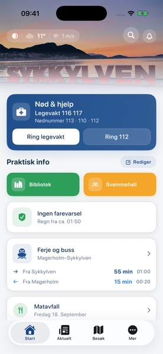
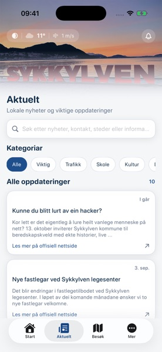
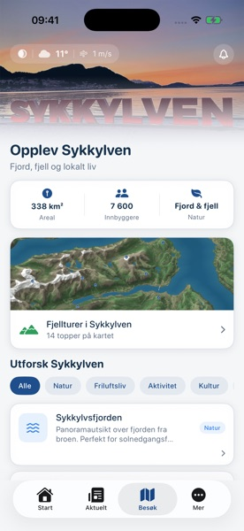

iPhone og Android · Gratis · Lukket testing
Ferja, bussen, tømmekalenderen, været og bygda — på ett sted.
Sykkylv1 samler det du trenger i hverdagen i Sykkylven. Du åpner appen og ser det du lurer på, uten å registrere deg for noe.



Alle tre ferjesambandene i og rundt bygda: Magerholm–Sykkylven, Hundeidvik–Festøya og Stranda–Liabygda, begge retninger. Bussavganger fra fem holdeplasser, også fra Magerholm-kaia. Neste avgang står øverst på forsiden, og trenger du å planlegge lenger fram, får du hele ruta.
Forsinkelser, redusert kapasitet og innstilte avganger kommer opp øverst. Meldingene settes sammen fra flere kilder, slik at beskjeden faktisk når fram. Du lukker den selv når du har lest.
Legg inn adressen din én gang, så viser appen når matavfall, restavfall, papir og plast blir hentet. Du får varsel kvelden før, til det klokkeslettet som passer deg. Miljøstasjonen på Jarnes ligger inne med åpningstider, også når den har stengt på helligdager.
Værvarsel for uka, nedbørsradar og farevarsel når det er meldt uvær. Sjøtemperatur, vind og tidevann for dem som skal ut på sjøen eller bade.
Nyheter og arrangementer fra kommunen, hele kinoprogrammet fra kulturhuset med lenke til billettkjøp, åpningstider for bibliotek og svømmehall, og fjellturer i området med kart og høyder.
Rutetidene virker også uten nett. Innholdet hentes fra flere kilder og settes sammen til én oversikt, slik at appen fortsatt gir svar når en enkelt kilde er nede. Alt innhold er på bokmål.
Teknisk: SwiftUI på iOS med egen widget på hjemmeskjermen, Kotlin på Android.
Appen er i lukket testing på begge plattformer, og jeg trenger flere testere på Android. Meld deg inn i testgruppa først — ellers får du beskjed om at testen ikke finnes — og send meg gjerne en e-post, så følger jeg deg opp.